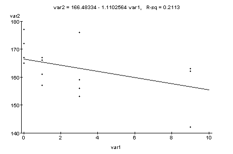
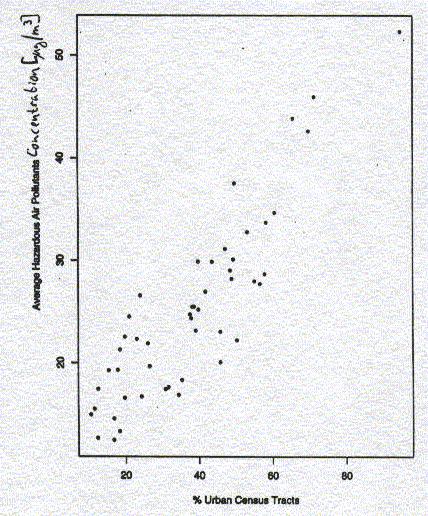

Note that all the material discussed in class (that is not part of the textbook) is relevant for the quiz as well.
Use the sample of 8 teams of the "Cost of Victories" data set I indicated in Section 3.1 of the lecture notes. Type this data into WebStat and conduct a "Simple Linear Regression" in the "Stat" menu. Make sure that Payroll is the explanatory variable and Wins is the response variable.
Indicate the exact values for slope, y-intercept, the regression equation, and the correlation coefficient obtained from WebStat. (5 Points)
Simple linear regression results: Independent variable: var1 Dependent variable: var2 Sample size: 16 Correlation coefficient: -0.4596 (See fitted line plot in Graphics Panel.) Estimate of sigma: 8.006156 Parameter Estimate Std. Err. DF Tstat Pval Intercept 166.48334 2.734623 14 60.879814 0 var1 -1.1102564 0.5733327 14 -1.9364958 0.0366

- a) Indicate the exact values for slope, y-intercept, the regression equation,
and the correlation coefficient obtained from WebStat. What is the explanatory
variable and what is the response variable? Comment on the relationship.
- b) Use this regression equation to predict the corn yield for 5, 10, and
100 weeds per meter. Which of these predictions are meaningful, which not?
Explain your answer.
- c) Below is a plot of the residuals versus Weeds. Does the residual
plot show any unusual pattern or do you think that, based on this
residual plot, our least squares regression line describes the
data reasonably well?


Below is a scatterplot of the same data. Our explanatory x-variable in this case is the percentage of urban census tracts and our response y-variable is the average concentration of hazardous air pollutants in each state. We are looking at data of 48 states plus Washington, D.C., i.e, n = 49. (5 Points)

- a) Fit a least squares (linear regression) line to the data.
It might help to know that:

- b) What is a possible interpretation of the slope and y-intercept
you calculated in (a) above? Explain.
- c) Calculate Pearson's correlation coefficient r between x and y.
How can we interpret this value for our given data set?
- d) Based on your calculations in (a), what is the predicted
concentration of air pollutants for a region that has 0%, 40%,
60%, 100% of urban census tracts.
Which of these 4 predictions are more reliable,
which are less reliable? Why?

- Which of these residual plot(s) represent(s) satisfactory pattern(s)
that show that your selected statistical model (e.g., a
least squares regression line) describes the data reasonably well.
- For each of the residual plots that does not represent
a satisfactory pattern, indicate the type of problem that occurs
with the data in that particular case.
- a) To survey the opinions of its customers, an airline company made
a list of all its flights and randomly selected 25 flights. All of the
passengers on those flights were asked to fill out the survey.
- b) A pollster interested in opinion on gun control divided a city into
city blocks, then surveyed the third house to the west of the southeast corner of
each block. If the house was divided into apartments, the westernmost ground floor
apartment was selected. The pollster conducted the survey during the day, but
left a notice for those who were not at home to phone her so she could interview them.
- c) To learn how its employees felt about higher student fees imposed
by the legislature, a university divided employees into three categories:
staff, faculty, and student employees. A random sample was selected from each
group and they were telephoned and asked for their opinion.
- d) A large variety store wants to know if consumers would be willing to
pay slightly higher prices to have computers available throughout the store to
help them locate items. The store posted an interviewer at the door and told her
to collect a sample of 100 opinions by asking the next person who came in the door
each time she had finished an interview.